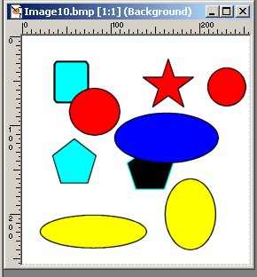
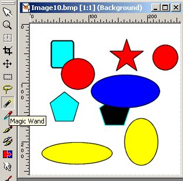
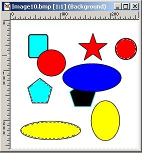
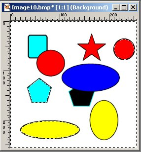
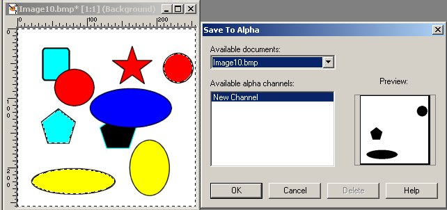
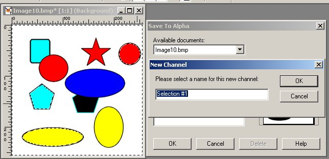

We'll start off assuming you have read and understand the How to Make an Alpha Channel tutorial. Since we are not going to make a project this time around, but only illustrate the principles of making the texture file, I will start off with an entirely different texture or bmp file. It could be a billboard, or a structure side, where you would like to have a series of see-through holes. Here is a BMP file to get us started:

The first thing to do is decide which areas are going to have the alpha channel, and thus end up transparent in the model. You need to pick a tool to do the job, so let's pick one of the Selection tools: here I have chosen the Magic Wand tool.

Now, lets select several areas for our project. Here I have clicked on the aqua pentagon, and then holding down the SHIFT key, have also selected the yellow ellipse and the red circle. You know they are selected because of the marching ants or marquees about these three selections.

What we have done is to select the areas that will not be masked out, and what we want to do is select the areas that will be alphaed out or become transparent. This is completely backwards to my logic, as what we want to select are the areas that are to be alphaed out. But if you look at this as masking, then what we have done is to protect the areas that we can not see through. So, we must Invert the selections, and we do that clicking Menu | Selections | Invert.

This results in the marquee now running around the outside of the texture as well as the three areas previously selected.
We need to save these selections to an alpha channel. This will complete our "Texture with Original Alpha" channels. Click on Menu | Selections | Save to Alpha Channel . A new window opens named Save to Alpha, and it has a Preview area.

This shows what the alpha channel will be treating as transparent areas will look like. The three areas you selected to be transparent are shown in black, in the Preview of the alpha channel.
If it looks OK, and it does, then click on OK. A new window opens, called New Channel. It now has a name for the new alpha channel, and the default name is: Selection #1.

Overwrite with another name if you like, but remember that name. Then click OK, and we are back to the bmp file that we started with, before we did the alpha thing. That is, it still has the marquee or marching ants going around the outside.
We need to eliminate those. Press CONTROL-D (or right-click anywhere on the image), and the marquee (or marching ants) disappears, leaving what looks like the original bmp file. But, it is not identical as internally PSP has kept the alpha channel, which we just told it to save.
Save As the .BMP file as a .TGA file which will preserve the hidden alpha channel. Be sure you used the Options instructions in the earlier Tutorial. Notice the image now shows: TGA as the file type. Remember where you saved it.